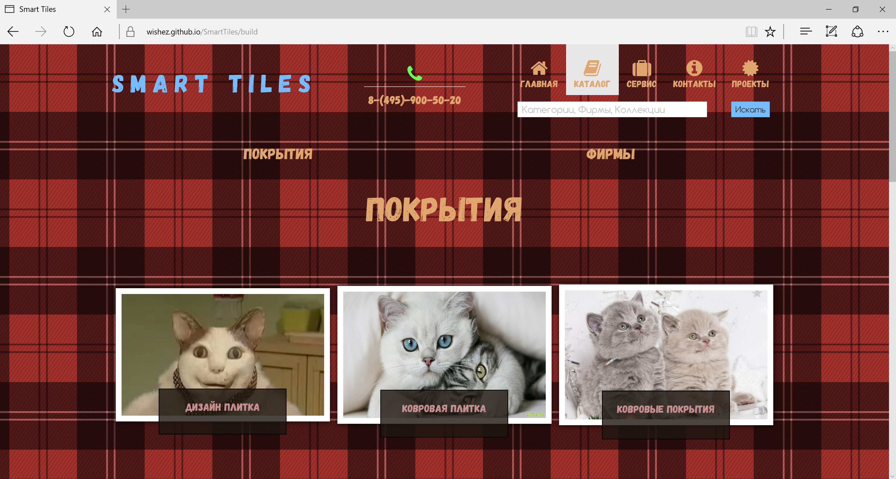
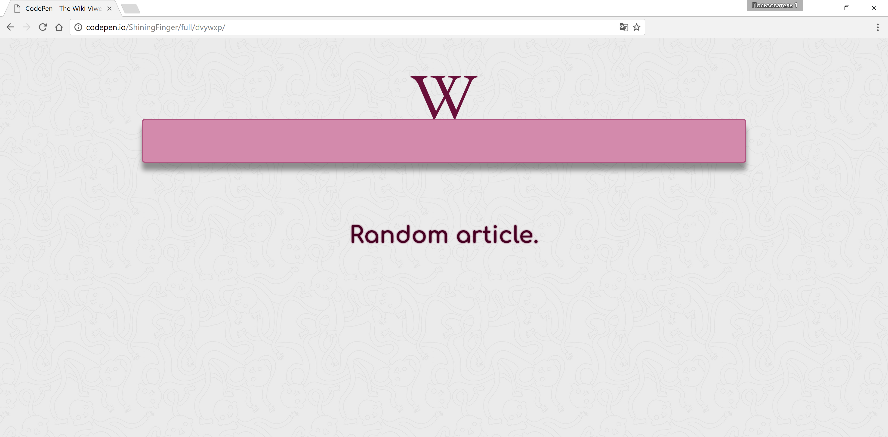
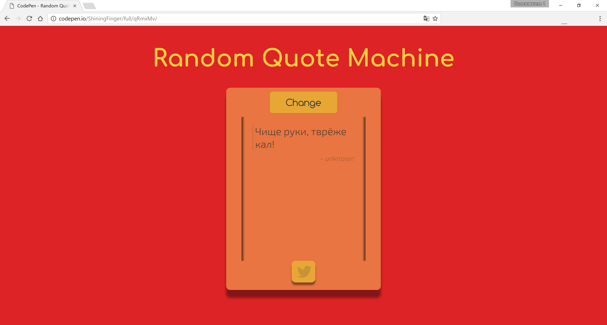
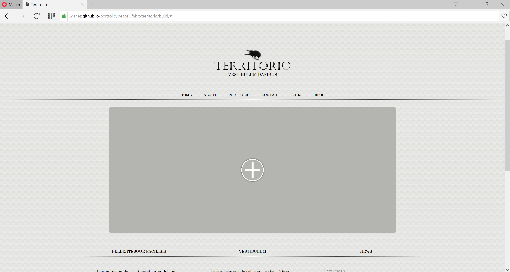
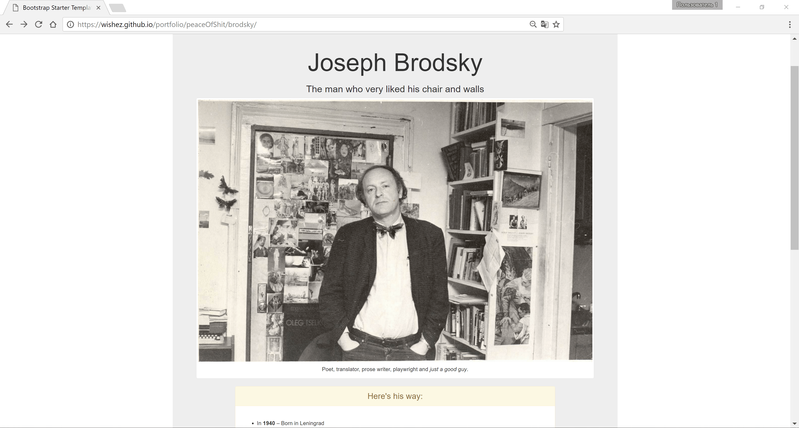
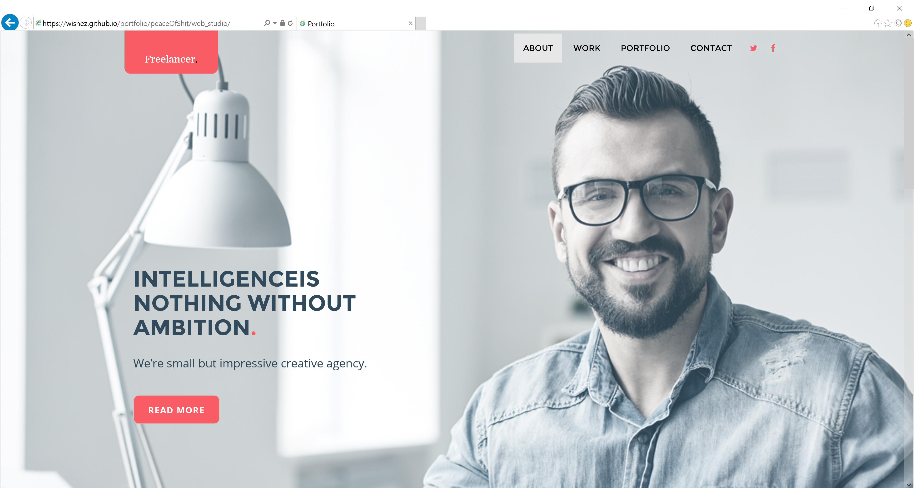

<!DOCTYPE html><html class="no-js" lang="ru"></html><head><meta charset="UTF-8"><meta name="viewport" content="width=device-width, initial-scale=1.0"><meta http-equive="X-UA-Compatible" content="IE=edge"><title>Filipp Zhuravlev</title><link rel="stylesheet" href="css/main-ru.css" media="none" onload="if (media !== 'all') media='all';"><!--[if IE]>
<link href="/css/ie9.css" media="all" rel="stylesheet" type="text/css" />
<![endif]-->
<!--[if lt IE 9]>
<script src="https://oss.maxcdn.com/html5shiv/3.7.3/html5shiv.min.js>
<script src="https://oss.maxcdn.com/respond/1.4.2/respond.min.js">
<![endif]--><script href="js/modernizr.min.js" async></script></head><body><!-- Header--><header class="banner navbar navbar-default"><div class="container"><!-- The "resume" flag.--><div class="hat navbar-header"><a class="hat__resume navbar-brand" href="#">Resume</a><button class="hat__btn collapsed navbar-toggle" id="navbarToggle" data-toggle="collapse" data-target="#collapsable" aria-expanded="false"><span class="sr-only">Toggle navigation</span><span class="icon-bar"></span><span class="icon-bar"></span><span class="icon-bar"></span></button></div><!-- Navigation--><nav class="navigation collapse navbar-collapse navbar-fixed-top" id="collapsable" role="navigation"><ul class="navigation__navList navList nav navbar-nav navbar-right"><li class="navList__item item"><a class="item__text" href="#top">Обо мне</a></li><li class="navList__item item"> <a class="item__text" href="#portfolio">Портфолио</a></li><li class="navList__item item"><a class="item__text" href="#skills">Навыки</a></li><li class="navList__item item"><a class="item__text" href="#hobbies">Хобби</a></li><li class="navList__item item"> <a class="item__text" href="#connect">Связь</a></li></ul></nav><a class="navigation__btnUp fa fa-arrow-circle-up fa-3x" id="btnUp" aria-hidden="true" href="#top"></a><!--END HEADER--></div></header><!-- Main Content--><a id="top"></a><main class="main"><header class="main__intro intro"><div class="container"><div class="intro__heading heading"><span class="heading__greet">Привет, меня зовут</span><h1 class="heading__name">Филипп</h1><span class="heading__and">&</span></div><div class="intro__introduce introduce"><p class="introduce__paragraph paragraph"><span class="paragraph__text paragraph__text-size_md">Я <span class='paragraph__icon paragraph__icon-icon_heart'></span> разрабатывать</span> 
<br>
<span class="paragraph__text paragraph__text-size_md paragraph__text-weight_n">вашы великолепные</span>
<br>
<span class="patagraph__text paragraph__text-size_xl paragraph__text-weight_b">вселенные</span>
<br> </p></div><div class="clearfix"></div><div class="activity"><div id="typed-strings"><p>Cоздаю <i>пользовательские интерфейсы</i></p><p>Верстаю <i>landing pages</i></p><p>Я <i>front-end</i> разработчик</p></div><span id="typed"></span></div><div class="intro__myFace myFace"><figure class="myFace__face img-circle"></figure></div></div></header><!--end intro--><section id="portfolio"><div class="portfolio container"><!--Portfolio title.--><div class="portfolio__title title"><h2 class="title__name">Portfolio</h2><p class="title__description">These are my works what i've done of blood and sweat.</p></div><!--Portfolio works.--><div class="portfolio__works works"><div class="works__elemWork"><a class="anchor" href="http://smart-tiles.tw1.ru"></a></div><div class="works__elemWork"><a class="anchor" href="http://codepen.io/ShiningFinger/full/PWMJVo/"></a></div><div class="works__elemWork"><a class="anchor" href="http://codepen.io/ShiningFinger/full/XpqVeR/"></a></div><div class="works__elemWork"><a class="anchor" href="http://codepen.io/ShiningFinger/full/MJVZdO/"></a></div><div class="works__elemWork"><a class="anchor" href="http://codepen.io/ShiningFinger/full/qRmxMv/"></a></div><div class="works__elemWork"><a class="anchor" href="https://wishez.github.io/portfolio/peaceOfShit/territorio/build/"></a></div><div class="works__elemWork"><a class="anchor" href="https://wishez.github.io/portfolio/peaceOfShit/blanq/"></a></div><div class="works__elemWork"><a class="anchor" href="https://wishez.github.io/portfolio/peaceOfShit/brodsky/"></a></div><div class="works__elemWork"><a class="anchor" href="https://wishez.github.io/portfolio/peaceOfShit/web_studio/"></a></div></div></div></section><!-- End portfolio section.--><section id="skills"><div class="skills container"><!--Skills title.--><div class="skills__title title"><h2 class="title__name">Skills</h2><p class="title__description">Here's what i've been combining to build awesome sites.</p></div><!--Thechnoligies' list.--><div class="skills__techno techno"><h3 class="techno__title">Technologies</h3><div class="clearfix"></div><ul class="techno__techList techList"><li class="techList__itemTechList techList__itemTechList-icon_html itemTechList"><a class="anchor" href="https://ru.wikipedia.org/wiki/HTML"><span class="item__desc tooltip" title="Язык - на котором пишется структура страницы, её фундамент.">Язык - на котором пишется структура страницы, её фундамент.</span><div class="progress"><div class="itemTechList__text progress-bar" role="progressbar" aria-valuenow="80" aria-valuemin="0" aria-valuemax="100" style="width:80%">HTML</div></div></a></li><li class="techList__itemTechList techList__itemTechList-icon_css itemTechList"><a class="anchor" href="https://ru.wikipedia.org/wiki/CSS"><span class="item__desc tooltip" title="Язык, который расскрашивает структуру страницы и даже анимирует">Язык, который расскрашивает структуру страницы и даже анимирует. </span><div class="progress"> <div class="itemTechList__text progress-bar" role="progressbar" aria-valuenow="85" aria-valuemin="0" aria-valuemax="100" style="width: 85%">CSS</div></div></a></li><li class="techList__itemTechList techList__itemTechList-icon_js itemTechList"><a class="anchor" href="https://ru.wikipedia.org/wiki/JavaScript"><span class="item__desc tooltip" title="Даёт возможность в режиме реального времени менять структуру(уже стилизованную и нет) странцы и не только.">Даёт возможность в режиме реального времени менять структуру(уже стилизованную и нет) странцы и не только.</span><div class="progress"> <div class="itemTechList__text progress-bar" role="progressbar" aria-valuenow="60" aria-valuemin="0" aria-valuemax="100" style="width:60%">JS</div></div></a></li><li class="techList__itemTechList techList__itemTechList-icon_jquery itemTechList"><a class="anchor" href="https://ru.wikipedia.org/wiki/JQuery"><span class="item__desc tooltip" title="Библиотека JavaScript, которая упрощает взаимодействие с элементами структуры и ускоряет разработку.">Библиотека JavaScript, которая упрощает взаимодействие с элементами структуры и ускоряет разработку.</span><div class="progress"> <div class="itemTechList__text progress-bar" role="progressbar" aria-valuenow="85" aria-valuemin="0" aria-valuemax="100" style="width:85%">jQuery</div></div></a></li><li class="techList__itemTechList techList__itemTechList-icon_sql item"><a class="anchor" href="https://ru.wikipedia.org/wiki/SQL"><span class="item__desc tooltip" title="Язык для общения с базой данных.">Язык для общения с базой данных.</span><div class="progress"> <div class="itemTechList__text progress-bar" role="progressbar" aria-valuenow="25" aria-valuemin="0" aria-valuemax="100" style="width:25%">SQL</div></div></a></li><li class="techList__itemTechList techList__itemTechList-icon_python item"><a class="anchor" href="https://ru.wikipedia.org/wiki/Python"><span class="item__desc tooltip" title="Позволяет разговаривать с сервером на парселтанге.">Позволяет разговаривать с сервером на парселтанге. </span><div class="progress"> <div class="itemTechList__text progress-bar" role="progressbar" aria-valuenow="20" aria-valuemin="0" aria-valuemax="100" style="width:20%">Python</div></div></a></li><li class="techList__itemTechList techList__itemTechList-icon_react item"><a class="anchor" href="https://facebook.github.io/react/"><span class="item__desc tooltip" title="Знаю, только то, что это фреймворок(библиотека) JavaScript и она упрощает отображения содержимого  на странице. Скоро ей займусь...">Знаю, только то, что это фреймворок(библиотека) JavaScript и она упрощает отображения содержимого  на странице. Скоро ей займусь...</span><div class="progress"> <div class="itemTechList__text progress-bar" role="progressbar" aria-valuenow="10" aria-valuemin="0" aria-valuemax="100" style="width:10%">ReactJS</div></div></a></li><li class="techList__itemTechList techList__itemTechList-icon_angular item"><a class="anchor" href="https://ru.wikipedia.org/wiki/AngularJS"><span class="item__desc tooltip" title="Ещё один фреймворк, который я постигну в ближайшем будущем. ">Ещё один фреймворк, который я постигну в ближайшем будущем. </span><div class="progress"> <div class="itemTechList__text progress-bar" role="progressbar" aria-valuenow="10" aria-valuemin="0" aria-valuemax="100" style="width:10%">AngularJS    </div></div></a></li></ul></div><!--Concepts' list.--><div class="skills__conceptsTechno concepts"><h3 class="concepts__title">More</h3><div class="clearfix"></div><ul class="concepts__conceptsList conceptsList"><li class="conceptsList__item item"> <a class="item__refer anchor" href="http://alistapart.com/article/responsive-web-design">Resposible Design<span class="item__desc tooltip" title="Гибкое содержимое, которое подстраивается, адаптирует под экран пользователя.">Гибкое содержимое, которое подстраивается, адаптирует под экран пользователя.</span></a></li><li class="conceptsList__item item"> <a class="item__refer anchor" href="https://en.wikipedia.org/wiki/Cross-browser">Cross-browser<span class="item__desc tooltip" title="Реализация одного и того же вида сайта в разных браузерах.">Реализация одного и того же вида сайта в разных браузерах.</span></a></li><li class="conceptsList__item item"> <a class="item__refer anchor" href="https://en.bem.info/methodology/">BEM<span class="item__desc tooltip" title="Концепция наименнования элементов страницы для повышения их абстракции и читаемости. ">Концепция наименнования элементов страницы для повышения их абстракции и читаемости. </span></a></li><li class="conceptsList__item item"> <a class="item__refer anchor" href="https://www.w3.org/WAI/intro/aria">WIA-ARIA<span class="item__desc tooltip" title="Описания структуры  страницы для вспомогательных технологий, таких как экранный диктор.">Описания структуры  страницы для вспомогательных технологий, таких как экранный диктор.</span></a></li><li class="conceptsList__item item"> <a class="item__refer anchor" href="https://en.wikipedia.org/wiki/Ajax_(programming)">AJAX<span class="item__desc tooltip" title="Асинхронный JavaScript и XML - мощная концепция для частичного динамического обновления страницы.">Асинхронный JavaScript и XML - мощная концепция для частичного динамического обновления страницы.</span></a></li><li class="conceptsList__item item"><a class="item__refer anchor" href="https://ru.wikipedia.org/wiki/Canvas_(HTML)">Canvas<span class="item__desc tooltip" title="Холст, на котором можно рисовать с помощью JavaScript.">Холст, на котором можно рисовать с помощью JavaScript.</span></a></li></ul></div><div class="clearfix"></div><!--Tools' list.--><div class="skills__tools tools"><h3 class="tools__title">Tools</h3><div class="clearfix"></div><!-- The Tools List --><ul class="tools__toolsList toolsList"><li class="toolsList__itemToolsList toolsList__itemToolsList-icon_gulp itemToolsList"><a class="anchor" href="http://getinstance.info/articles/tools/introduction-to-gulp/"><span class="item__desc tooltip" title="Сборщик пакетов, который служит для выполнения рутиных задач веб-мастера, что делает разработку в over9000 раз быстрее.">Сборщик пакетов, который служит для выполнения рутиных задач веб-мастера, что делает разработку в over9000 раз быстрее.</span><div class="progress"><div class="itemToolsList__text progress-bar" role="progressbar" aria-valuenow="60" aria-valuemin="0" aria-valuemax="100" style="width:60%">Gulp</div></div></a></li><li class="toolsList__itemToolsList toolsList__itemToolsList-icon_git itemToolsList"><a class="anchor" href="https://ru.wikipedia.org/wiki/Git"><span class="item__desc tooltip" title="Удобная штука для хранения и демонстрации сайта/приложения/кода.">Удобная штука для хранения и демонстрации сайта/приложения/кода.</span><div class="progress"> <div class="itemToolsList__text progress-bar" role="progressbar" aria-valuenow="50" aria-valuemin="0" aria-valuemax="100" style="width:50%">Git</div></div></a></li><li class="toolsList__itemToolsList toolsList__itemToolsList-icon_sass itemToolsList"><a class="anchor" href="https://ru.wikipedia.org/wiki/Sass"><span class="item__desc tooltip" title="Надстройка над языком CSS, которая делает его сладким в создание хороших таблиц стилей;3.">Надстройка над языком CSS, которая делает его сладким в создание хороших таблиц стилей;3. </span><div class="progress"> <div class="itemToolsList__text progress-bar" role="progressbar" aria-valuenow="65" aria-valuemin="0" aria-valuemax="100" style="width:65%">Sass</div></div></a></li><li class="toolsList__itemToolsList toolsList__itemToolsList-icon_pug itemToolsList"><a class="anchor" href="https://pugjs.org/api/getting-started.html"><span class="item__desc tooltip" title="Надстройка над языком HTML, упрощающая описания структуры документа. Вы только посмотрите на этого пёсика;3.">Надстройка над языком HTML, упрощающая описания структуры документа. Не менее сладкая, чем SASS;3.</span><div class="progress"> <div class="itemToolsList__text progress-bar" role="progressbar" aria-valuenow="45" aria-valuemin="0" aria-valuemax="100" style="width:45%">Pug</div></div></a></li><li class="toolsList__itemToolsList toolsList__itemToolsList-icon_bootstrap item"><a class="anchor" href="http://bootstrap-3.ru/index.php"><span class="item__desc tooltip" title="Библиотека готовых интерфейсов, которые упрощают разработку и повышают её скорость.">Библиотека готовых интерфейсов, которые упрощают разработку и повышают её скорость.</span><div class="progress"> <div class="itemToolsList__text progress-bar" role="progressbar" aria-valuenow="70" aria-valuemin="0" aria-valuemax="100" style="width:70%">Bootstrap</div></div></a></li><li class="toolsList__itemToolsList toolsList__itemToolsList-icon_photoshop item"><a class="anchor" href="https://ru.wikipedia.org/wiki/Adobe_Photoshop"><span class="item__desc tooltip" title="Фотошоп - это фотошоп, вот что это.">Фотошоп - это фотошоп, вот что это.</span><div class="progress"> <div class="itemToolsList__text progress-bar" role="progressbar" aria-valuenow="55" aria-valuemin="0" aria-valuemax="100" style="width:55%">Photoshop</div></div></a></li><!-- li.toolsList__itemToolsList.toolsList__itemToolsList-icon_bable.item--><!--  a.anchor(href="https://babeljs.io/")--><!--    span.item__desc.tooltip(--><!--      title="Компилирует стандарт языка ECMAScript2015 в JS. Я только в процессе его освоения..."--><!--    ) Компилирует стандарт языка ECMAScript2015 в JS. Я только в процессе его освоения...--><!--    .progress --><!--      .itemToolsList__text.progress-bar(--><!--        role="progressbar",--><!--        aria-valuenow="10",--><!--        aria-valuemin="0",--><!--        aria-valuemax="100",--><!--        style="width:10%"--><!--      ) Bable--><li class="toolsList__itemToolsList toolsList__itemToolsList-icon_mocha item"><a class="anchor" href="https://learn.javascript.ru/testing"><span class="item__desc tooltip" title="Тестировщик JavaScript - обычный.">Тестировщик JavaScript - обычный.</span><div class="progress"> <div class="itemToolsList__text progress-bar" role="progressbar" aria-valuenow="10" aria-valuemin="0" aria-valuemax="100" style="width:10%">Mocha</div></div></a></li><li class="toolsList__itemToolsList toolsList__itemToolsList-icon_django item"><a class="anchor" href="http://djbook.ru/rel1.9/intro/overview.html"><span class="item__desc tooltip" title="Django, как Wordpress, такая же свободная система управления контентом, написаная на языке Python.">Django, как Wordpress, такая же свободная система управления контентом, только написаная на языке Python.</span><div class="progress"> <div class="itemToolsList__text progress-bar" role="progressbar" aria-valuenow="15" aria-valuemin="0" aria-valuemax="100" style="width:15%">Django</div></div></a></li></ul></div><!--Consepts tools' list.--><div class="skills__conceptsTools concepts"><h3 class="concepts__title">More</h3><div class="clearfix"></div><ul class="concepts__conceptsList conceptsList"><li class="conceptsList__item item"><a class="item__refer anchor" href="http://compass-style.org/">Compass<span class="item__desc tooltip" title="Библиотека написанная на SASS с множеством примочек.">Библиотека написанная на SASS с множеством примочек.</span></a></li><li class="conceptsList__item item"> <a class="item__refer anchor" href="https://ru.wikipedia.org/wiki/JQuery_UI">jQuery UI<span class="item__desc tooltip" title="Библиотека с готовым и настраиваемым пользовательским интерфейсом.">Библиотека с готовым и настраиваемым пользовательским интерфейсом.</span></a></li><li class="conceptsList__item item"><a class="item__refer anchor" href="https://ru.wikipedia.org/wiki/Ext_JS">ExtJS<span class="item__desc tooltip" title="Огромная библиотека с элементами пользовательского интерфейса, которые в основном нужна для сайтов с высокой нагрузкой.">Огромная библиотека с элементами пользовательского интерфейса, которые в основном нужна для сайтов с высокой нагрузкой.</span></a></li><li class="conceptsList__item item"><a class="item__refer anchor" href="http://fontawesome.io/icons/">Font-awesome<span class="item__desc tooltip" title="Стильные иконки написанные на CSS.">Стильные иконки написанные на CSS.</span></a></li><li class="conceptsList__item item"> <a class="item__refer anchor" href="https://modernizr.com/">Modernizr<span class="item__desc tooltip" title="Инструмент для тестирования способностей браузеров.">Инструмент для тестирования способностей браузеров.</span></a></li><li class="conceptsList__item item"> <a class="item__refer anchor" href="http://susy.oddbird.net/">Susy<span class="item__desc tooltip" title="Удобная систем разметки сетки.">Удобная систем разметки сетки.</span></a></li></ul></div></div></section><!-- End section skills.--><section id="hobbies"><div class="hobbies container"><!--Hobbies title.--><div class="hobbies__title title"><h2 class="title__name">Hobbies</h2><p class="title__description"> Out of work, I enjoy these things.</p></div><!--Drawing's section.--><section class="hobbies__hobby hobby"><div class="hobby__img hobby__img-drawing"></div><h3 class="hobby__title text-center">Drawing</h3><div class="hobby__paragraph">When i draw, i dive into my amazing  imaginary world, where everyone and everything is very beautiful; unfortunately, none of my pictures aren't similar  to a thing of my little world.</div></section><!--Ukulele's section.--><section class="hobbies__hobby hobby"><div class="hobby__img hobby__img-ukulele"></div><h3 class="hobby__title text-center">The Ukulele</h3><p class="hobby__paragraph">The playing on ukulele is wonderful. I enjoy a each sound of this musical instrument. But also, I sure a any other musical instrument don't inferior to it; therefore, I going to master another one, and It will be a piano.  </p></section><!--Languege's section.--><section class="hobbies__hobby hobby"><div class="hobby__img hobby__img-languages"></div><h3 class="hobby__title text-center">Languages</h3><p class="hobby__paragraph">Learning languages is very important. When you know many languages, new worlds are opening before you, and you can swim among other awesome ideas and thoughts. Now, i swim among english and japanese worlds.</p></section></div></section><section id="connect"><div class="container connect"><div class="connect__title title"><h2 class="title__name">Connect</h2><p class="title__description">Let's talk!</p></div><!-- Connect Form--><form class="connect__connectForm connectForm" id="connectMe" method="post"><div class="connectFrom__elemForm elemForm"><label class="elemForm__label" for="name">Name</label><input class="elemForm__item" id="name" name="name" placeholder="Name" maxlength="24" minlength="2" required></div><div class="connectFrom__elemForm elemForm"><label class="elemForm__label" for="email">Email Addres</label><input class="elemForm__item" id="email" name="email" placeholder="Email Addres" maxlenght="40" minlength="10" required></div><div class="connectFrom__elemForm elemForm"><label class="elemForm__label" for="phone">Phone number</label><input class="elemForm__item" id="phone" name="phone" placeholder="Phone number"></div><div class="connectFrom__elemForm elemForm"><label class="elemForm__label" for="message">Message</label><textarea class="yourName elemForm__item" id="message" name="message" placeholder="Message" maxlength="255" required></textarea></div><div class="connectForm__sendBtn sendBtn"><button class="sendBtn__btn btn" id="send" type="submit">Send</button></div></form><!-- Socials--><ul class="connect__socials socials text-center"><li class="socials__contact contact"><a class="contact__cover cover anchor" href="mailto:shiningfinger@list.ru"><i class="cover__icon fa fa-envelope-o fa-2x" aria-hidden="true"> </i><span class="cover__text">shiningfinger@list.ru</span></a></li><li class="socials__contact contact"><a class="contact__cover cover anchor" href="https://github.com/Wishez"><i class="cover__icon fa fa-github fa-2x" aria-hidden="true"> </i><span class="cover__text">/Wishez </span></a></li><li class="socials__contact contact"><a class="contact__cover cover anchor" href="https://twitter.com/FilippMercury"><i class="cover__icon fa fa-twitter fa-2x" aria-hidden="true"></i><span class="cover__text">@FilippMercury</span></a></li><li class="socials__contact contact"><a class="contact__cover cover anchor" href="https://www.linkedin.com/profile/preview?  locale=ru_RU&amp;trk=prof-0-sb-preview-primary-button"><i class="cover__icon fa fa-linkedin fa-2x" aria-hidden="true"> </i><span class="cover__text">in/filipp-zhuravlev-907bb7124 </span></a></li><li class="socials__contact contact"><a class="contact__cover cover anchor" href="https://www.freecodecamp.com/wishez"><i class="cover__icon fa fa-free-code-camp fa-2x" aria-hidden="true"> </i><span class="cover__text">/wishez</span></a></li><li class="socials__contact contact"><a class="contact__cover cover anchor" href="tel:shining_finger"><i class="cover__icon fa fa-skype fa-2x" aria-hidden="true"> </i><span class="cover__text">shiningfinger</span></a></li></ul></div></section></main><script src="js/main.js" async></script></body><link href="/css/screen.css" media="none" rel="stylesheet" onload="if(media != 'screen') media='screen';"><link href="/css/print.css" media="none" rel="stylesheet" type="text/css" onload="if(media != 'print') media='print';"><link rel="icon" type="image/png" href="/img/my_face.png"><link rel="stylesheet" href="css/ie.css" media="none" onload="if(media != 'all') media='all';">